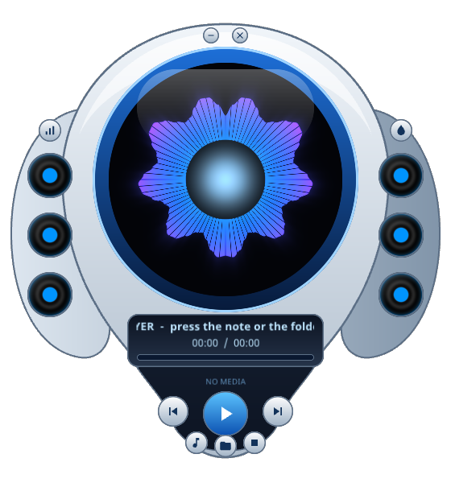
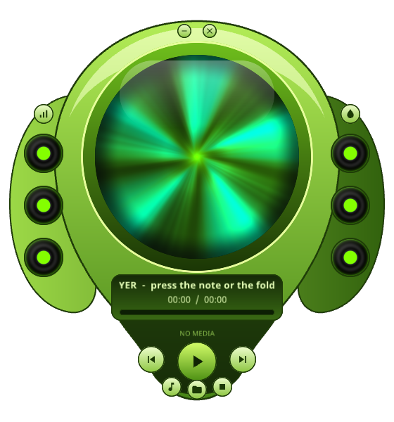
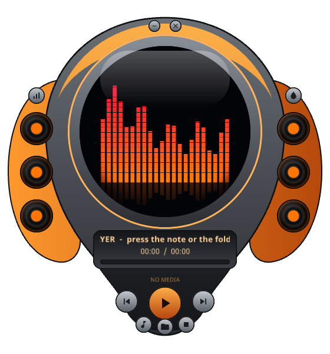

In the spirit of the old Windows Media Player skins: no window frame, painted chrome, and a round screen that dances to the music. Written once in Ranger, drawn by EVG — in your browser and as a native desktop app.



On the desktop the window is cut to the skin's outline. Nothing is drawn around it, and clicks outside the outline go to the window underneath. You drag the player by its body.
32 frequency bands from the music drive three shaders: a ring, a tunnel and bar meters. The speakers on the wings pulse with the bass.
The same Ranger source runs as JavaScript in the browser and as C++ on macOS and Linux. Both use the same layout, the same skins and the same shaders.
The desktop app is built from source. You need Node.js 20 or newer, a C++17 compiler and SDL2. The Ranger compiler comes from npm, and the EVG engine is fetched from its own repository at the commit the project pins.
# once: the Xcode command line tools and SDL2
xcode-select --install
brew install sdl2 node
git clone https://github.com/terotests/EVGMusicPlayer
cd EVGMusicPlayer
npm install
npm run native # builds native/build/evg-player and "EVG Player.app"
open "native/build/EVG Player.app"
# or with music straight away:
native/build/evg-player ~/Music/*.mp3Drag EVG Player.app into /Applications if you want it in Launchpad.
# Debian / Ubuntu
sudo apt-get install build-essential libsdl2-dev libgl-dev nodejs npm
# optional, for the file and folder buttons
sudo apt-get install zenity
git clone https://github.com/terotests/EVGMusicPlayer
cd EVGMusicPlayer
npm install
npm run native
native/build/evg-player ~/MusicOn X11 the window is cut to the skin with the SHAPE extension, so its edge is hard (one bit per pixel) unless a compositor is running.
There is nothing to install: open the player, then press the note to choose files, press the folder to choose a whole folder, or drop files onto the page. Add ?demo to the address to see the visualiser without any music.
# or run the page locally
git clone https://github.com/terotests/EVGMusicPlayer
cd EVGMusicPlayer
npm install
npm run web # http://127.0.0.1:8131/| Drag the body | Move the player around the screen |
| ⏮ ▶/⏸ ⏭ ⏹ | Previous / play–pause / next / stop. Previous restarts the track if more than 3 s have played. |
| ♪ and the folder | Open files, or a whole folder (its subfolders too) |
| Seek bar | Click or drag |
| Mouse wheel | Volume |
| Bars button · V | Change the visualiser: ring, tunnel, bars |
| Drop button · K | Change the skin: ice, lime, ember |
| Space ← → S O | Play–pause, previous, next, stop, open |
| – and × on the crest | Minimise and close (desktop). Esc or Q also quits. |
| Drop files on it | Plays them, in the browser and on the desktop |
The player is a small Ranger program, PlayerApp.rgr.
It builds the skin as a tree of elements, keeps the playlist and decides what each button means. It does no
drawing, sound or file handling itself. A host does those: a page script in the browser, a small C++ program on the desktop.
The body, wings, crest and chin are SVG paths. Every colour and position is in player.css,
and each of the three skins is just a set of CSS variables (@vars ice { … }). Changing the skin
changes the theme; the element tree stays the same. EVG lays the tree out and turns it into a
display list: a flat list of drawing commands. A painter turns that list into pixels.
The round screen is an EVG surface effect. The stylesheet puts it on an element
(evg-surface-effect: evgp-spectrum), and a GLSL function paints the element's box every frame.
The music never touches the tree. Each frame the host writes 32 band levels straight into the effect's
parameters, so nothing has to be laid out again.
// shaders/effects.json: a manifest, read by both painters
{ "name": "evgp-spectrum", "file": "spectrum.glsl", "arrays": { "b": 32 },
"params": { "level": 0, "mode": 0, "hue": 205, "hue2": 275, "playing": 0 } }
// shaders/spectrum.glsl: p is the point in page pixels, local is 0..1 in the box
vec4 fxColor(vec2 p, vec2 local) {
vec2 uv = (local - 0.5) * 2.0;
… // p_b0 … p_b31, p_level, uTime
}
The same manifest and GLSL are registered with EVG's WebGL painter in the browser and with EVG's native
OpenGL painter on the desktop (evg/storm/native).
A new effect is one GLSL function and works in both.
In the browser an <audio> element plays the file, and a Web Audio analyser gives the spectrum.
On the desktop dr_mp3 decodes the file, SDL plays it, and a 2048-point FFT with the browser
analyser's window, smoothing and decibel range gives the same 32 bands. If the output device goes away, for
example when the computer sleeps or headphones are unplugged, the player opens the default device again
and carries on where the music was.
On macOS the window has no border and is not opaque. Its OpenGL surface is transparent, so what the skin does not paint is not there, and the system shadow follows the outline. A layer-backed OpenGL window still takes clicks in its whole rectangle, so the player watches the pointer and lets clicks through whenever it is outside the outline.
On Linux (X11) the window is cut with SDL's shaped-window API, using a mask taken from the first frame the player draws.
The app icon comes from the same drawing: the player draws its own screen, crops it to a disc, and that becomes the window icon and the Dock icon.